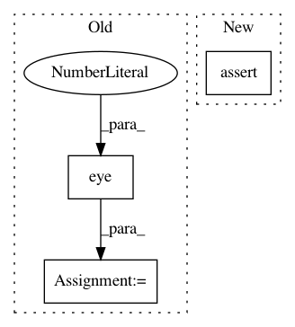

54f2f61256b10c05b8c637e9076982db53f09018,geomstats/special_euclidean_group.py,SpecialEuclideanGroup,exponential_barycenter,#SpecialEuclideanGroup#Any#Any#,308
Before Change
rotation_vectors = transfo_vectors[:, 0:3]
translations = transfo_vectors[:, 3:6]
biinvariant_metric = so_group.InvariantMetric(self.rotations,
np.eye(3))
mean_rotation = biinvariant_metric.riemannian_mean(rotation_vectors,
weights)
// Partie translation, p34 de expbar
After Change
n_transformations, _ = transfo_vectors.shape
assert n_transformations > 0
if weights is None:
weights = np.ones(n_transformations)
In pattern: SUPERPATTERN
Frequency: 4
Non-data size: 3
Instances
Project Name: geomstats/geomstats
Commit Name: 54f2f61256b10c05b8c637e9076982db53f09018
Time: 2018-01-19
Author: ninamio78@gmail.com
File Name: geomstats/special_euclidean_group.py
Class Name: SpecialEuclideanGroup
Method Name: exponential_barycenter
Project Name: nilearn/nilearn
Commit Name: a04fdeac1f3d7ad8f0e49393bb48e090c124ef99
Time: 2017-11-17
Author: jerome@dockes.org
File Name: nilearn/datasets/tests/test_atlas.py
Class Name:
Method Name: test_fetch_atlas_talairach
Project Name: keras-team/keras
Commit Name: b95fcf7f52aca8ad0b1afb3cfc64c8eed534fafe
Time: 2017-07-29
Author: me@taehoonlee.com
File Name: tests/keras/backend/backend_test.py
Class Name: TestBackend
Method Name: test_eye
Project Name: nipy/dipy
Commit Name: d2d840e663ef14a39ae8ebc4f17400be384a9ade
Time: 2013-12-23
Author: mrbago@gmail.com
File Name: doc/examples/streamline_tools.py
Class Name:
Method Name: